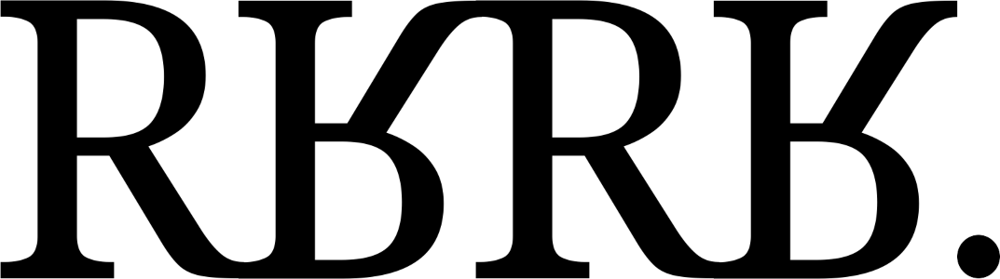

Rejoice!
Rejoice is a concatenative programming language and notation where data is encoded as multisets that compose by multiplication. Think Fractran, without the rule-searching, or Forth without a stack.
Basics
- The program state is a bag of unordered things. For example, the bag
[cube cone^3]contains one cube, and three cones. - Symbols are things in the bag written as either numeric decimal integers or names representing prime values. For example, the bag
[8 ball^2]and[2^3 ball ball]are equal. - Transformations are represented as fractions in which the denominator indicates things to remove from the bag, and the numerator, the things to add. For example,
owl/[cat^2], means to replace twocatwith oneowl.
Multiple instances of things are grouped as thing^count. The empty bag, or identity, is represented as [].
Evaluation consists of applying fractions in a sequence when their denominators are found in the bag. The program halts when there are no more fractions left to apply.
blue^3 red cyan/pink red [cyan^2]/red red/[blue^2 cyan] blue^3 red red [cyan^2]/red red/[blue^2 cyan] blue^3 red^2 [cyan^2]/red red/[blue^2 cyan] blue^3 red cyan^2 red/[blue^2 cyan] blue red^2 cyan
Logic I
Here is the implementation of a NOT logic gate.
false not true/[false not] false/[true not] true false/[true not] true
true not true/[false not] false/[true not] true not false/[true not] false
The different handlers are sequenced one after the other, here is a OR gate. Notice the need for a sentinel or symbol.
x y or true/[x y or] true/[x or] true/[y or] false/or true true/[x or] true/[y or] false/or true true/[y or] false/or true false/or true
or true/[x y or] true/[x or] true/[y or] false/or or true/[x or] true/[y or] false/or or true/[y or] false/or or false/or false
Loops
A @label is a special symbol that holds an address that is jumped to upon entering the bag. This documentation will capitalize the labels to make them explicit, but it is merely a convention. Here is a how a simple loop is created:
times^5 @Loop ( t -- ) Loop/times done
[times^5] Loop/times [times^4] Loop/times [times^3] Loop/times [times^2] Loop/times [times] Loop/times [] Loop/times []
If two or more functions are called at once, the interpreter may choose to evaluated them non-deterministically, throw an error or evaluate them in symbolic order.
Logic II
Here is the implementation of a greater comparison.
x^3 y^2 @Gth ( x y -- x y true/false ) Gth/[x y] true/x Gth/x false/y Gth/y
[x^3 y^2] Gth/[x y] true/x Gth/x false/y Gth/y [x^2 y] Gth/[x y] true/x Gth/x false/y Gth/y [x] Gth/[x y] true/x Gth/x false/y Gth/y [x] true/x Gth/x false/y Gth/y [true] Gth/x false/y Gth/y [true] false/y Gth/y [true] Gth/y [true]
Arithmetic
The function [x Add]/y drains y into x and calls itself again for as long as y is in the bag, effectively finding the sum by resource transfer.
x^3 y^4 @Add ( x y -- xres ) [x Add]/y
[x^3 y^4] [x add]/y [x^4 y^3] [x add]/y [x^5 y^2] [x add]/y [x^6 y] [x add]/y [x^7] [x add]/y [x^7]
To find the difference between two symbols, the program can take out one of each symbol until exhaustion, leaving either x for a positive result, or y for a negative result. The following recursive function can find the result:
x^5 y^3 @Sub ( x y -- xres ) Sub/[x y]
[x^5 y^3] Sub/[x y] [x^4 y^2] Sub/[x y] [x^3 y] Sub/[x y] [x^2] Sub/[x y] [x^2]
I/O
Symbols that start with . will be emited as output and immediately removed from the bag. Symbols that start with .# will emit their amount.
pigs^3 ( print a word ) .pigs: ( print the count ) .#pigs
pigs:3
There is presently no input, this is a work in progress.
FizzBuzz
This would not be complete without an example of FizzBuzz:
times^100 f b @Loop ( times -- ) [num f b .FizzBuzz\n Loop]/[times f^3 b^5] [num f b .Fizz\n Loop]/[times f^3] [num f b .Buzz\n Loop]/[times b^5] [num f b .#num .\n Loop]/times
1 2 Fizz 4 Buzz Fizz 7 8 Fizz Buzz 11 Fizz 13 14 FizzBuzz 16 17 ..
Relationship to Fractran
A Fractran program can be thought of as a Rejoice program with a single label at the top. For example, the Fractran program: 225, 7/3, 7/5
r3^2 r5^2 @Fractran ( r3 r5 -- r3+r5.r7 ) [Fractran r7]/r3 [Fractran r7]/r5
[r3^2 r5^2] [Fractran r7]/r3 [Fractran r7]/r5 [r3 r5^2 r7] [Fractran r7]/r3 [Fractran r7]/r5 [r5^2 r7^2] [Fractran r7]/r3 [Fractran r7]/r5 [r5^2 r7^2] [Fractran r7]/r5 [r5 r7^3] [Fractran r7]/r3 [Fractran r7]/r5 [r5 r7^3] [Fractran r7]/r5 [r7^4] [Fractran r7]/r3 [Fractran r7]/r5 [r7^4] [Fractran r7]/r5 [r7^4]
- Source, Uxntal.
- Repository, Uxntal.
- Multiset Languages: Fractran, Bägel.

incoming: tropical arithmetic fractran bagel 2026